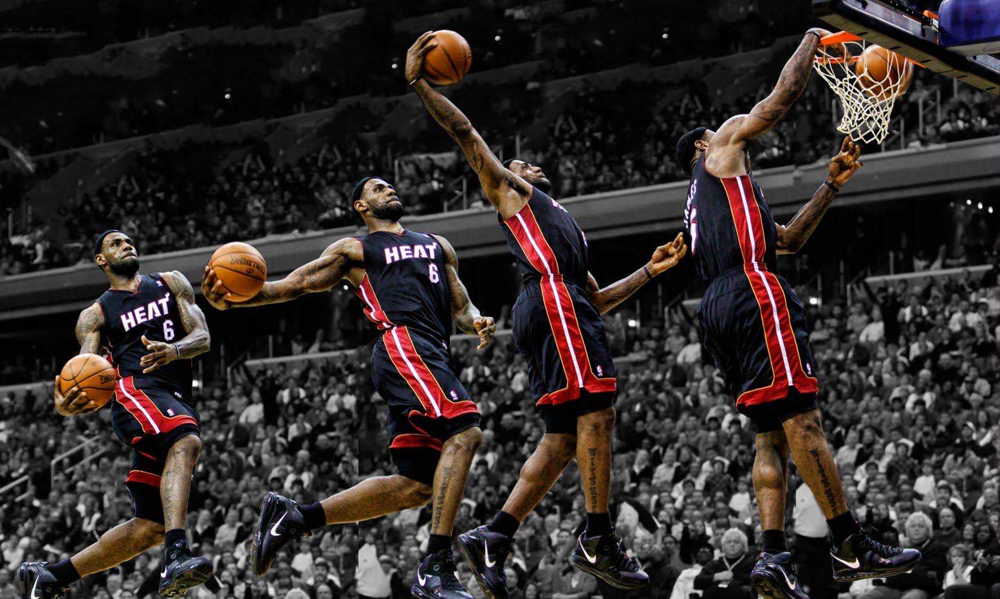

Lebron James, in my opinion, is the best to ever play the game of basketball. He was born and raised in Akron, Ohio, and went straight from High School to the NBA, and has been dominating the NBA until this day. He has won three NBA Finals, and has a current streak of reaching six consecutive NBA finals. This web page is all about Lebron James, and his history. My goal is to provide information to people that may not know they are watching the greatest player to ever live. He not only is the greatest to ever live, Lebron is an incredible role model. James will continue to inspire all people for the rest of his career, just as Michael Jordan has inspired others. Below are some statistics, awards, and pictures that will hopefully provide insight on my opinion.

Lebron James started his career in Cleveland, which is fitting because he grew up in Ohio. His first seven years with the Cavaliers were very successful for a young player. He reached the Finals once at the beginning of his career, and he won Rookie of the Year in 2004 and won MVP in 2009 and 2010. Lebron is a very competitive athlete, and this mediocre success was not enough for him. Despite what everyone thought, Lebron packed his bags for Miami and joined the Heat. While playing with the Heat, he made it to the Finals his first year in Miami, and they suffered a humiliating loss to the Mavericks. The next year Lebron bounced back and won the Finals and the Finals MVP against the Thunder. Over the next two years, Lebron reached the Finals twice. He beat the Spurs, and lossed to the Spurs. Even though he lossed the Finals once again, the feeling of defeat carried him to even more greatness in the future.
| Team | Point Total | PPG | RPG | Assists | Steals |
|---|---|---|---|---|---|
| Cavaliers | 15,251 | 27.8 | 7.1 | 7.0 | 1.7 |
| Heat | 7919 | 26.9 | 7.6 | 6.7 | 1.7 |
| Cavaliers | 3663 | 25.3 | 6.7 | 7.1 | 1.5 |
The summer after losing to the Spurs in the Finals, Lebron rejoined the Cleveland Cavaliers. His mission was to bring a championship to his true home in Ohio. Lebron joined a very young Cavaliers team that consisted of Kyrie Irving, Tristan Thompson, and Kevin Love. Lebron needed to become a leader on this team if they were going to achieve greatness. The Cavaliers lived up to the hype in Lebron's first season. They reached the playoffs, however, Kevin Love and Kyrie Irving were injured heading into the Finals against the explosive Golden State Warriors. Lebron played tremendous in the Finals, but the Cavaliers could not hold off the Warriors and lost four games to two. Needless to say, the Cavaliers were on a mission the next season and reached the playoffs with ease. The Cavaliers did not lose a game unitl they reached the Eastern Conference Finals, where they beat the Toronto Raptors. Lebron would then have to face his toughest test, the Golden State Warriors. It looked like Lebron would be dissapointed another year when the Cavs went down 3-1. However, Lebron and the Cavs would not quit, and they came all te way back and forced a game seven. The Cavaliers were victorious in game seven, and Lebron finally accomplished his life goal.